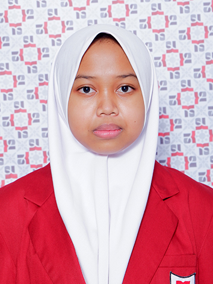
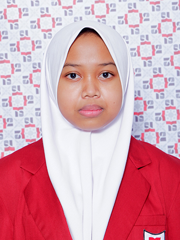

Biodata
|  | Nama | : | Atiqah Fathin Fauziyyah |
| Alamat | : | JL. Kavaleri Dalam No.12C Malang | |
| Tanggal Lahir | : | 24 Juli 2006 | |
| Hobi | : | Menyanyi |
|  | Nama | : | Atiqah Fathin Fauziyyah |
| Alamat | : | JL. Kavaleri Dalam No.12C Malang | |
| Tanggal Lahir | : | 24 Juli 2006 | |
| Hobi | : | Menyanyi |